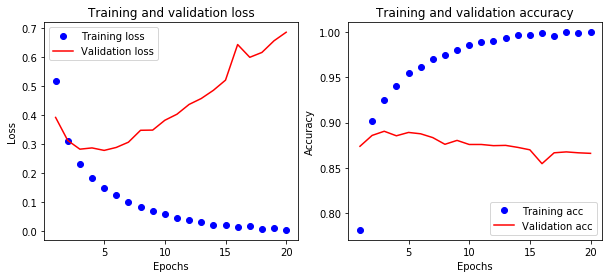
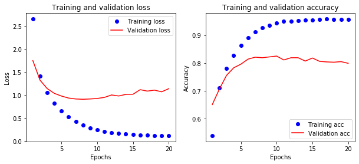

电影评论&新闻主题文本分类
Boylad · 2019-11-24
IMDB电影评论分类(二分类)1
IMDB数据集有50000条highly-polarized（高度极端化的）评论，其中训练集与测试集各有25000条评论，每个集合中正面评论与负面评论各占50%。
import numpy as np
import matplotlib.pyplot as plt
from keras.datasets import imdb
from keras import models, layers, optimizers, losses, metrics
(train_data,train_labels),(test_data,test_labels) = imdb.load_data(num_words=10000)
num_words=10000意味着仅保留训练集中出现频率最高的10000个单词，其余的单词将会被丢弃。训练集与测试集中的电影评论已经用数字按序列进行了编码，每个数字编码一个单词。训练集与测试集的标签编码为0和1，其中0表示负面评论，1表示正面评论。训练集中第一条评论及标签如下：
print('训练集第一条电影评论：', '\n', train_data[0])
print('\n', '训练集第一条电影评论的标签：', train_labels[0])
训练集第一条电影评论：
[1, 14, 22, 16, 43, 530, 973, 1622, 1385, 65, 458, 4468, 66, 3941, 4, 173, 36,
256, 5, 25, 100, 43, 838, 112, 50, 670, 2, 9, 35, 480, 284, 5, 150, 4, 172, 112,
167, 2, 336, 385, 39, 4, 172, 4536, 1111, 17, 546, 38, 13, 447, 4, 192, 50, 16,
6, 147, 2025, 19, 14, 22, 4, 1920, 4613, 469, 4, 22, 71, 87, 12, 16, 43, 530, 38,
76, 15, 13, 1247, 4, 22, 17, 515, 17, 12, 16, 626, 18, 2, 5, 62, 386, 12, 8,
316, 8, 106, 5, 4, 2223, 5244, 16, 480, 66, 3785, 33, 4, 130, 12, 16, 38, 619,
5, 25, 124, 51, 36, 135, 48, 25, 1415, 33, 6, 22, 12, 215, 28, 77, 52, 5, 14,
407, 16, 82, 2, 8, 4, 107, 117, 5952, 15, 256, 4, 2, 7, 3766, 5, 723, 36, 71,
43, 530, 476, 26, 400, 317, 46, 7, 4, 2, 1029, 13, 104, 88, 4, 381, 15, 297, 98,
32, 2071, 56, 26, 141, 6, 194, 7486, 18, 4, 226, 22, 21, 134, 476, 26, 480, 5,
144, 30, 5535, 18, 51, 36, 28, 224, 92, 25, 104, 4, 226, 65, 16, 38, 1334, 88,
12, 16, 283, 5, 16, 4472, 113, 103, 32, 15, 16, 5345, 19, 178, 32]
训练集第一条电影评论的标签：
1
因为保留的是训练集出现评率最高的10000个单词，所以在训练集上所有电影评论中，单词的最大编码为9999。
max([max(sequence) for sequence in train_data])
9999
下面的代码提供了对电影评论解码的方式，其中word_index为解码字典，它提供了每个单词(key)的编码数字(value)。将训练集的第一条评论解码：
# word_index is a dictionary mapping words to an integer index
word_index = imdb.get_word_index()
# We reverse it, mapping integer indices to words
reverse_word_index = dict([(value, key) for (key, value) in word_index.items()])
# We decode the review; note that our indices were offset by 3, because 0, 1
#and 2 are reserved indices for "padding", "start of sequence", and "unknown".
decoded_review = ' '.join([reverse_word_index.get(i-3,'?') for i in train_data[0]])
decoded_review
"? this film was just brilliant casting location scenery story direction everyone's
really suited the part they played and you could just imagine being there robert ?
is an amazing actor and now the same being director ? father came from the same
scottish island as myself so i loved the fact there was a real connection with this
film the witty remarks throughout the film were great it was just brilliant so much
that i bought the film as soon as it was released for ? and would recommend it to
everyone to watch and the fly fishing was amazing really cried at the end it was so
sad and you know what they say if you cry at a film it must have been good and this
definitely was also ? to the two little boy's that played the ? of norman and paul
they were just brilliant children are often left out of the ? list i think because
the stars that play them all grown up are such a big profile for the whole film but
these children are amazing and should be praised for what they have done don't you
think the whole story was so lovely because it was true and was someone's life
after all that was shared with us all"
为了将训练集输入MLP需要先将其转成tensor。这里我们自定义了函数ectorize_sequences对输入数据进行矢量化处理（类似one-hot编码）。训练集编码后的第一条评论如下：
def vectorize_sequences(sequences, dimension=10000):
results = np.zeros((len(sequences), dimension))
for i ,sequence in enumerate(sequences):
results[i, sequence] = 1.
return results
x_train = vectorize_sequences(train_data)
x_test = vectorize_sequences(test_data)
print(x_train[0])
[0. 1. 1. ... 0. 0. 0.]
将标签矢量化：
y_train = np.asarray(train_labels).astype('float32')
y_test = np.asarray(test_labels).astype('float32')
构建MLP。因为是二分类问题，输出层维度为1，激活函数用Sigmoid。
model = models.Sequential()
model.add(layers.Dense(16, activation='relu', input_shape=(10000,)))
model.add(layers.Dense(16, activation='relu'))
model.add(layers.Dense(1, activation='sigmoid'))
编译模型，优化器用RMSprop，损失函数用binary_crossentropy。
model.compile(optimizer=optimizers.RMSprop(lr=0.001),
loss=losses.binary_crossentropy,
metrics = [metrics.binary_accuracy])
取测试集的前10000条评论及其标签作为验证集，余下的为测试集。
x_val = x_train[:10000]
partial_x_train = x_train[10000:]
y_val = y_train[:10000]
partial_y_train = y_train[10000:]
训练MLP：
history = model.fit(partial_x_train, partial_y_train, epochs=20,
batch_size=512, validation_data=(x_val, y_val))
model.fit返回一个history对象，其中的history以字典的形式记录了训练过程中的一些信息。字典的键如下：
history.history.keys()
dict_keys(['val_loss', 'val_binary_accuracy', 'loss', 'binary_accuracy'])
训练过程中，Loss与Accuracy在训练集与验证集上的变化情况：
acc = history.history['binary_accuracy']
val_acc = history.history['val_binary_accuracy']
loss = history.history['loss']
val_loss = history.history['val_loss']
epochs = range(1, len(acc) + 1)
plt.figure(figsize = (10, 4))
plt.subplot(121)
plt.plot(epochs, loss, 'bo', label='Training loss')
plt.plot(epochs, val_loss, 'r', label='Validation loss')
plt.title("Training and validation loss")
plt.xlabel('Epochs')
plt.ylabel('Loss')
plt.legend()
plt.subplot(122)
acc_values = history.history['binary_accuracy']
val_acc_values = history.history['val_binary_accuracy']
plt.plot(epochs, acc, 'bo', label='Training acc')
plt.plot(epochs, val_acc, 'r', label='Validation acc')
plt.title('Training and validation accuracy')
plt.xlabel('Epochs')
plt.ylabel('Accuracy')
plt.legend()
plt.show()

从上图可以看出，这里存在两个主要问题：
- 首先，模型严重过拟合。
- 其次，验证集上的损失函数不降反升。
本文暂时不提供此问题的后续解决办法。在测试集上评估训练出来的MLP：
model.evaluate(x_test, y_test)
25000/25000 [==============================] - 1s 59us/step
[0.7437253212714195, 0.8511199951171875]
可见，这个不太好的MLP在测试集上能达到85.1%的预测准确率。其对测试集的预测结果如下：
model.predict(x_test)
array([[0.00663328],
[0.99999934],
[0.8203349 ],
...,
[0.00185019],
[0.04305837],
[0.8595511 ]], dtype=float32)
路透社新闻主题分类(多分类)1
路透社新闻数据集包含了一系列的新闻及其对应的46个主题。在训练集中，每个主题的新闻至少有10条。训练集有8982条新闻，测试集有2246条新闻。
(train_data, train_labels), (test_data, test_labels)
= reuters.load_data(num_words=10000)
这里的新闻和IMDB电影评论的编码方式是一样的，因此在这里采用同样的方法处理之：
def vectorize_sequences(sequences, dimension=10000):
results = np.zeros((len(sequences), dimension))
for i, sequence in enumerate(sequences):
results[i, sequence] = 1.
return results
x_train = vectorize_sequences(train_data)
x_test = vectorize_sequences(test_data)
不同之处在于，IMDB电影评论分类是一个单标签、二分类问题，路透社新闻主题是一个单标签、多分类问题，因此我们需要在这里对多分类标签one-hot编码：
one_hot_train_labels = to_categorical(train_labels)
one_hot_test_labels = to_categorical(test_labels)
由于输出空间是46维的，为了减少信息丢失，我们将在中间层使用更多的神经元。因为这里是多(46)分类问题，因此输出层有46个神经元，且激活函数用Softmax。
model = models.Sequential()
model.add(layers.Dense(64, activation='relu', input_shape=(10000,)))
model.add(layers.Dense(64, activation='relu'))
model.add(layers.Dense(46, activation='softmax'))
编译模型时损失函数用categorical_crossentropy，交叉熵在这里测量网络输出的概率分布与标签的真实分布之间的距离，我们优化的目标就是使这个距离尽可能小。
model.compile(optimizer='rmsprop',
loss='categorical_crossentropy',
metrics=['accuracy'])
从测试集中取出一部分作为验证集：
x_val = x_train[:1000]
partial_x_train = x_train[1000:]
y_val = one_hot_train_labels[:1000]
partial_y_train = one_hot_train_labels[1000:]
训练MLP：
history = model.fit(partial_x_train,
partial_y_train,
epochs=20,
batch_size=512,
validation_data=(x_val, y_val))
loss = history.history['loss']
val_loss = history.history['val_loss']
acc = history.history['accuracy']
val_acc = history.history['val_accuracy']
epochs = range(1, len(loss) + 1)
plt.figure(figsize = (10, 4))
plt.subplot(121)
plt.plot(epochs, loss, 'bo', label='Training loss')
plt.plot(epochs, val_loss, 'r', label='Validation loss')
plt.title('Training and validation loss')
plt.xlabel('Epochs')
plt.ylabel('Loss')
plt.legend()
plt.subplot(122)
plt.plot(epochs, acc, 'bo', label='Training acc')
plt.plot(epochs, val_acc, 'r', label='Validation acc')
plt.title('Training and validation accuracy')
plt.xlabel('Epochs')
plt.ylabel('Accuracy')
plt.legend()
plt.draw()
plt.show()

从上图来看，过拟合依然很严重（本文不处理过拟合问题）。模型在测试集上的准确率为78.45%。而随机猜测的话，准确率约为18.70%。
results = model.evaluate(x_test, one_hot_test_labels)
results
test_labels_copy = copy.copy(test_labels)
np.random.shuffle(test_labels_copy)
float(np.sum(np.array(test_labels) == np.array(test_labels_copy)))/len(test_labels)
2246/2246 [==============================] - 0s 213us/step
[1.2605379232846512, 0.777827262878418]
0.18699910952804988
在测试集上进行预测。以测试集的第一条新闻为例：
predictions = model.predict(x_test)
print(predictions[0])
print('测试集中第一条新闻预测概率最大类别：', np.argmax(predictions[0]))
[4.80769995e-05 2.41823582e-05 6.53409870e-06 3.85235429e-01
5.96243203e-01 2.56278732e-08 8.46131752e-06 9.75931471e-06
4.78585204e-03 7.96324343e-07 5.27540033e-06 2.50866666e-04
5.08730545e-06 2.26869561e-05 8.39701624e-06 3.56125906e-06
5.28250472e-04 6.13580050e-06 3.81557174e-06 6.02525193e-03
6.20968500e-03 8.49447897e-05 1.73399343e-07 8.12980124e-06
1.19534127e-06 2.99812586e-06 5.80627884e-08 7.93678737e-06
2.35581028e-05 9.96108702e-06 1.76731864e-05 5.79861990e-08
1.69704163e-05 1.66173027e-06 1.58278708e-05 1.31563875e-05
5.15696483e-05 1.13537044e-06 2.78967036e-07 3.02351982e-04
6.56175558e-08 3.55363568e-06 4.78143829e-06 1.15967751e-08
9.18917553e-10 4.61979965e-07]
测试集中第一条新闻预测概率最大类别： 4
可以看出，我们训练的模型，有59.62%的把握认为测试集中第一条新闻属于类别标签4。
-
本文整理自：Deep Learning with Python ↩︎